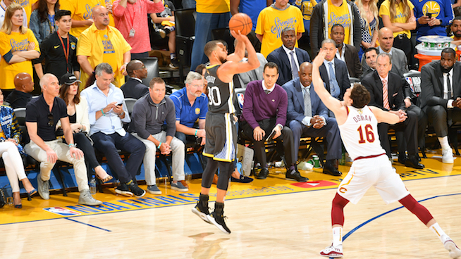
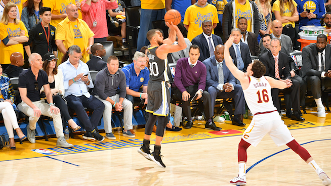

The Stephen Curry Effect
Despite not having played the full season this year, Stephen Curry is undoubtedly one of the greatest players in this game. Not only is Steph Curry one of the greatest players, he has single handedly revolutionized the way
basketball is played in the NBA. There aren't many players you can say that have changed basketball. However during the 2015 and 2016 seasons -- Steph Curry changed basketball and the entire league.
Back in the summer of 2009, when Steph Curry was drafted by the Golden State Warriors, nobody knew what to expect. A pure shooter, who had the ability to take over a game at a moment’s notice, Curry certainly attracted a great deal of attention from NBA scouts. His performance in NCAA March Madness catapulted him all the way to the seventh overall pick in the draft.
Fast forward ten years into the future, and Curry has already accomplished more than most NBA players could ever imagine. A three-time NBA champion, he has taken the Warriors organization to a new level, mimicking the NFL’s New England Patriots in terms of dominance and consistency. On a personal level, Curry has claimed the NBA MVP Award twice, and he is already a six-time All-Star.
But the most interesting facet of his achievements is the way in which he has achieved it all. Curry is notorious for his three-point shooting abilities. It’s remarkable and fun watching him play. The ease with which he shoots the ball from long distance is something that has truly changed the game.
The volume and efficiency with which Stephen Curry shoots the three pointer, is historical to say the least. We can easily see how he stood out amongst the league's top 3-Point shooters (by volume) in his MVP 2015-2016 season by looking at the following scatter plot.
3-Pointers Attempted vs. 3-Pointers Made per game in the 2015-16 Season
(Top 50 Shooters by Volume)
 
